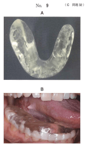

| 分類 | 出現時期 | 症状 |
|---|---|---|
| 早期影響 | 照射中〜数週間 | 粘膜炎、味覚障害、皮膚炎（紅斑）、脱毛 |
| 晩期影響 | 数ヶ月〜数年後 | 口腔乾燥症、顎骨壊死、放射線誘発癌、多発性齲蝕 |
舌癌の小線源治療（組織内照射）時に使用される装置。
小児では発育中の組織が障害を受けやすい。
口腔癌の放射線治療による早期影響はどれか。2つ選べ。
【解説】早期影響は照射中〜数週間以内に出現する。粘膜炎（a○）と味覚障害（b○）は早期影響。下顎骨壊死（c×）・口腔乾燥症（d×）・放射線誘発癌（e×）は晩期影響。
口腔領域悪性腫瘍の放射線治療の副作用と口腔管理で正しいのはどれか。1つ選べ。
【解説】口腔乾燥により自浄作用が低下し、齲蝕は照射野外の歯にも多発する（e○）。口腔乾燥は回復しにくい（a×）。照射野内の抜歯は照射前に行う（b×）。粘膜炎は照射中に増悪する（c×）。顎骨壊死は晩期影響で照射直後には出現しない（d×）。
放射線診療による発がんについて正しいのはどれか。1つ選べ。
【解説】放射線誘発癌は晩期影響（a○）。確率的影響であり、しきい線量はない（b×、c×）。IVRでも内部被曝でも発がんは生じうる（d×、e×）。
舌癌の小線源治療に用いられるスペーサーで予防できるのはどれか。1つ選べ。
【解説】スペーサーは線源と下顎骨の距離を離すことで下顎骨壊死を予防する（d○）。齲蝕・歯周病・口腔乾燥症は距離では予防できない（a×、b×、e×）。舌潰瘍は線源が直接接する舌に生じるもので、スペーサーの目的ではない（c×）。
舌癌の小線源治療時に使用される口腔内装置の写真（別冊No.9A）と装着時の口腔内写真（別冊No.9B）を別に示す。
この装置の使用目的に最も関係が深いのはどれか。1つ選べ。

【解説】スペーサーは線源と下顎骨の距離を離す装置（a○）。距離の逆二乗則により、距離を離すと線量が低下し、下顎骨壊死を予防できる。遮蔽（b）は鉛などで放射線を遮る方法で、この装置の原理ではない。酸素効果（c）・増感効果（d）・ブラッグピーク（e）はいずれも無関係。
小児における放射線治療で晩期障害を受けやすいのはどれか。1つ選べ。
【解説】小児では発育中の組織が放射線の障害を受けやすい。歯胚は分化・形成途上にあり、最も晩期障害を受けやすい（e○）。歯の形成異常（矮小歯、歯根短縮など）を引き起こす。舌・口唇・口底・歯肉は成人と同様の感受性（a〜d×）。